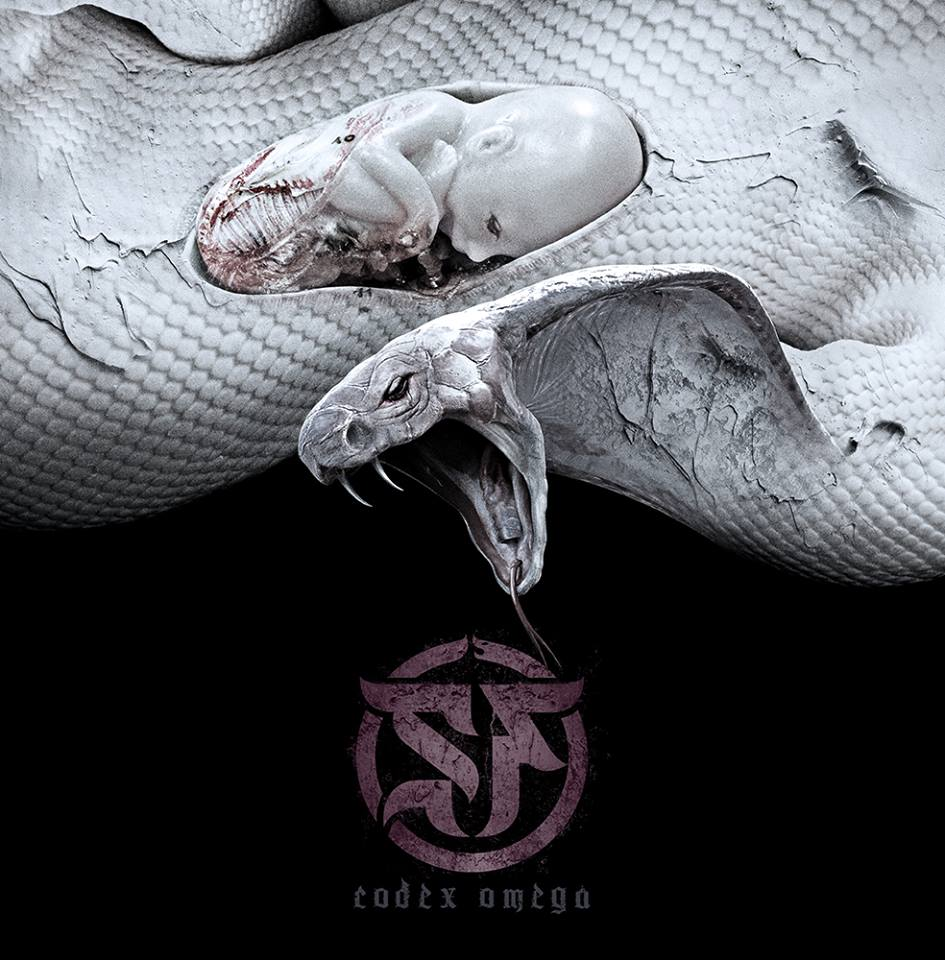

Gen : Symphonic Melodic Death Metal
 Grecii de la Septicflesh au revenit cu un nou album!
De aceasta data se observa faptul ca este vorba de o productie mult mai fina fata de celelalte albume,
mult mai atenta la detalii, in special in zona chitarilor si a vocii.
Albumul are foarte multe puncte forte, dar in special reiese orchestra, la care s-a pus o atentie speciala.
Atmosfera albumului este una mult mai sumbra fata de celelalte,
dar in acelasi timp unele melodii aduc o lumina speciala,
intalnita in melodii precum The Vampire From Nazareth (The Great Mass).
Chitara este ceva mai lenta in majoritatea melodiilor, se pastreaza totusi ritmul alert
In concluzie este un album de nota 10, unul dintre cele mai bune albume lansate in 2017.